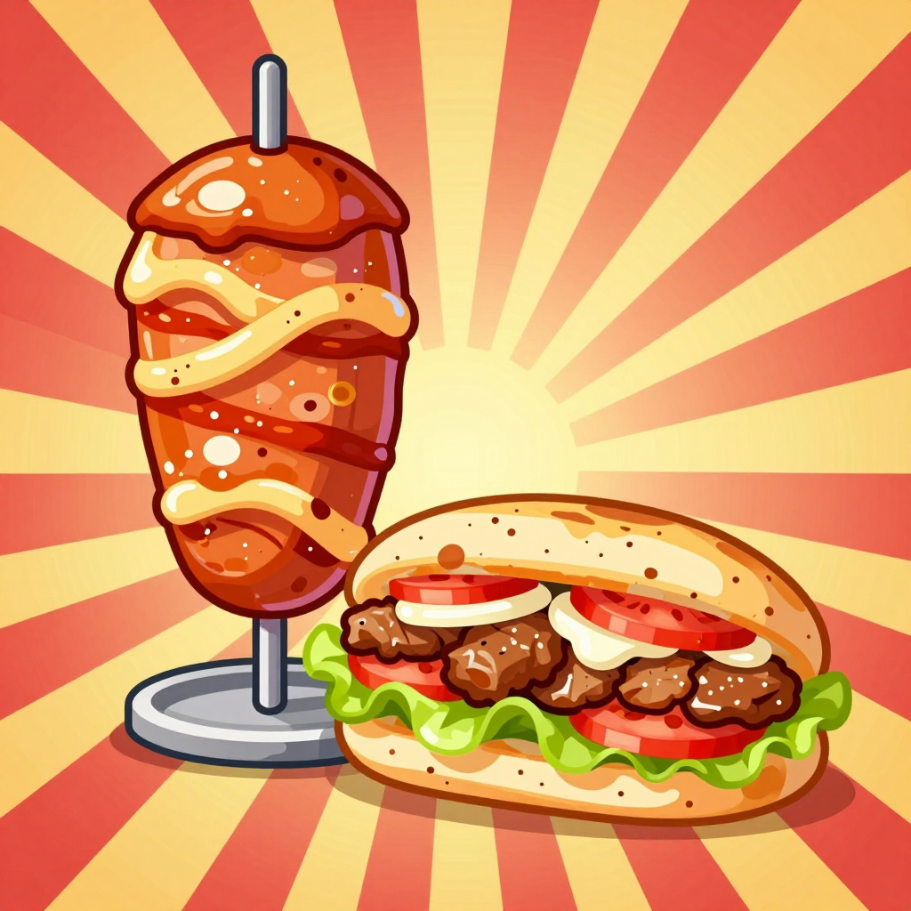

Döner Please hesabını ve verilerini sil
Yol 1 – oyunda
Döner Please'i aç, Ayarlar'a git, hesabını aç ve "Hesabı sil"i seç. Oyuncu hesabın ve bulut kaydın hemen silinir.
Yol 2 – e-postayla
UBTOPstudio@gmail.com adresine "Döner Please hesap silme" konulu bir e-posta gönder. Hesabını 30 gün içinde siler ve e-postayla onaylarız.
Neler silinir
- Oyuncu hesabın (anonim oyuncu kimliği) ve giriş bağlantısı.
- Bulut kaydın (oyun ilerlemesi, bulutta kayıtlı satın alımlar).
Neler kalır
- Seninle ilişkilendirilemeyen anonim analiz ve çökme verileri: analizlerde en fazla 14 ay, çökme raporlarında en fazla 90 gün.
- Google Play kendi satın alma kayıtlarını Google'ın kurallarına göre saklar.
Yalnızca telefonunda duran oyun kayıtları, oyunu kaldırdığında silinir.